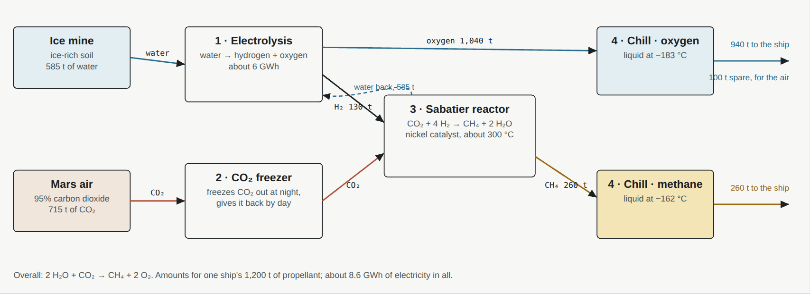

Rocket fuel
Methane and oxygen, made from ice and air. A ship refuelled on Mars can fly home or on without carrying its return fuel all the way from Earth.
The chemistryMore than a century old
Methane and oxygen were chosen for SpaceX's Starship partly because both can be made on Mars, as Robert Zubrin and David Baker proposed in their Mars Direct plan of 1990. The chemistry is more than a century old; a Sabatier reactor has made water from waste carbon dioxide on the Space Station since 2010.
CO₂ + 4 H₂ → CH₄ + 2 H₂O (Sabatier, nickel catalyst, about 300 °C)
overall: CO₂ + 2 H₂O → CH₄ + 2 O₂
Water comes from the ice mine (see water), carbon dioxide from the air, frozen out at night. The methane and oxygen are then chilled to liquids and stored.
A fuel plantWhat it takes

The spaceport's fuel plant fuels the ships for their voyages to see space, and the pods for their scenic flights. The fuel plant, in the design plan →
SourcesWhere the numbers come from
- R. Zubrin and D. Baker (1990), the Mars Direct plan: making the return fuel on Mars.
- NASA: the Sabatier system of the Space Station's life support (2010).
- The amounts for one ship are the design's own (design plan, chapter 07).